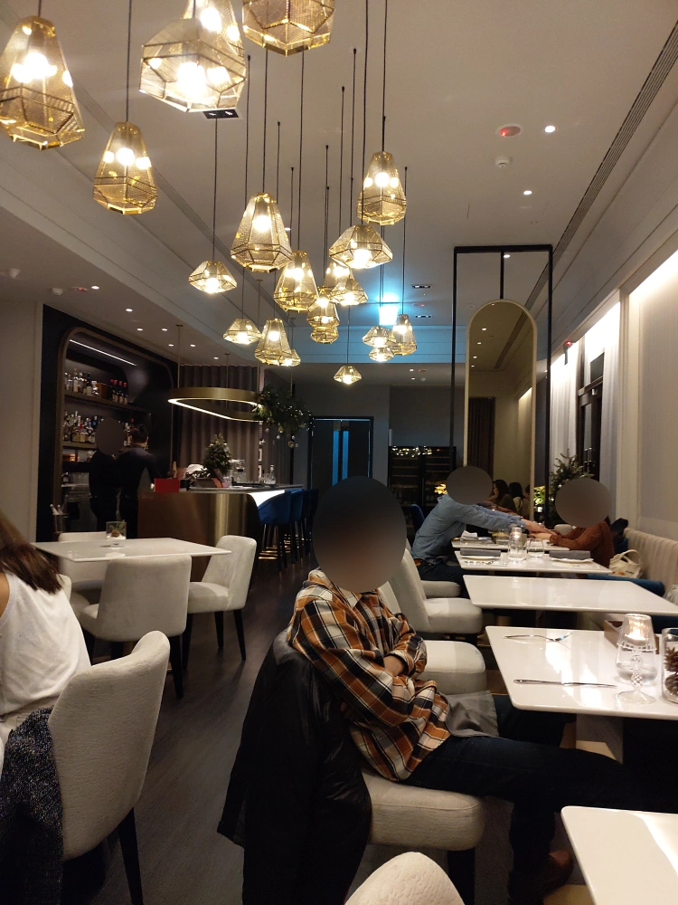
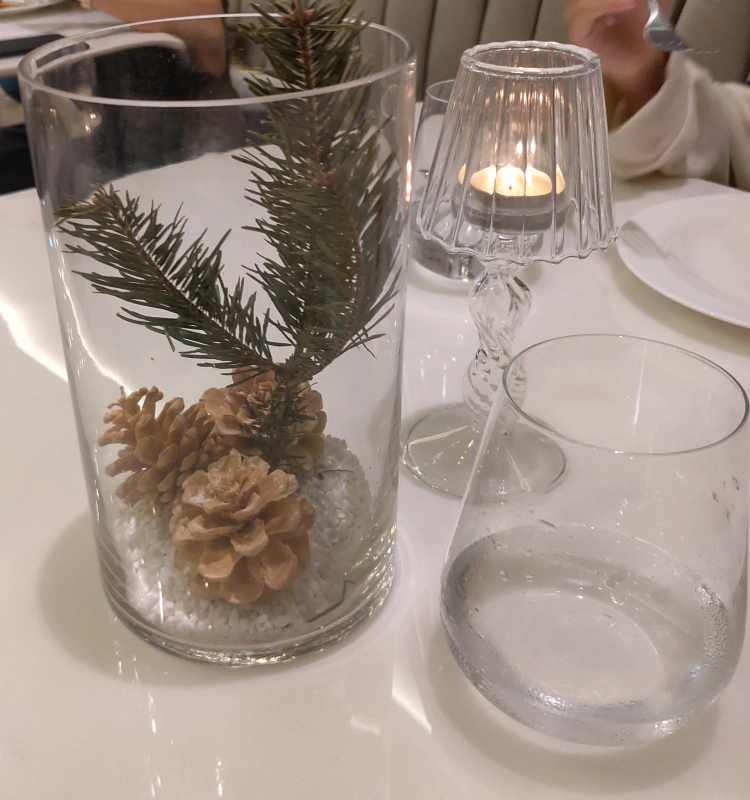
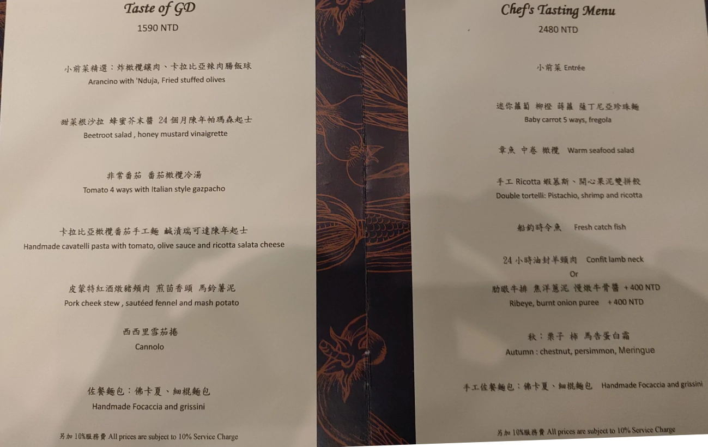
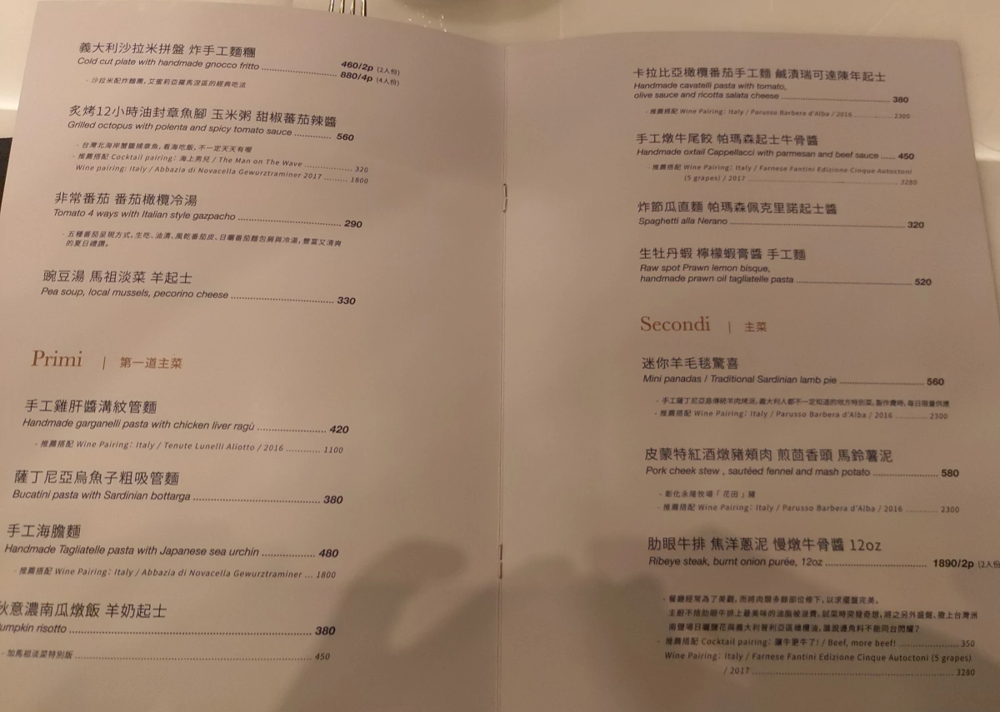
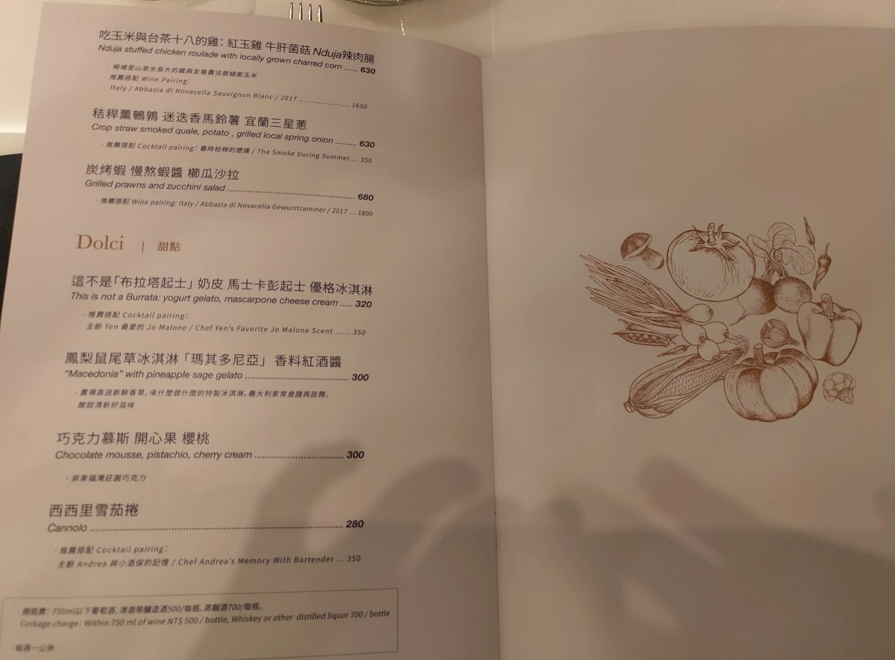
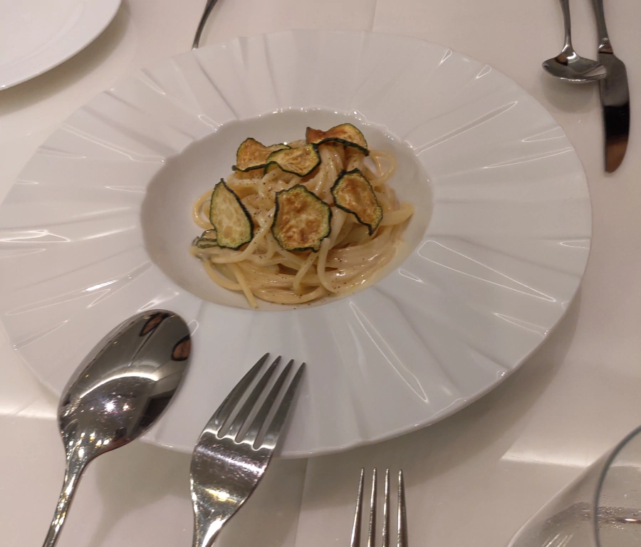
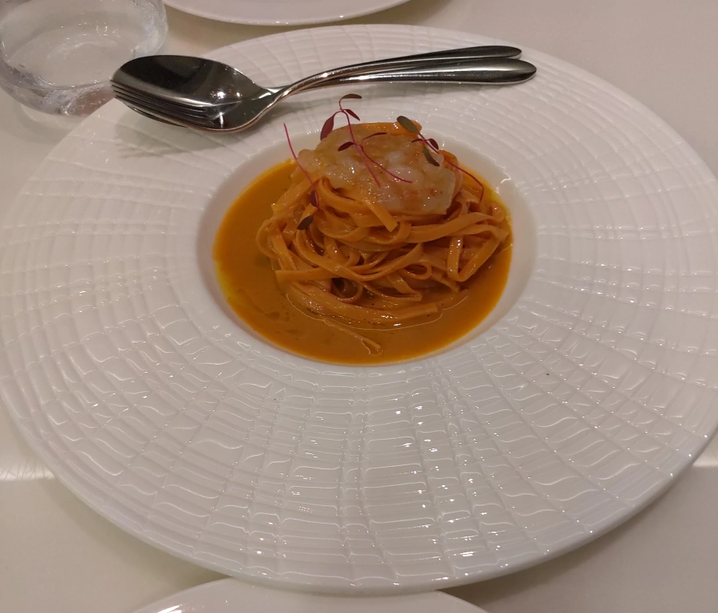
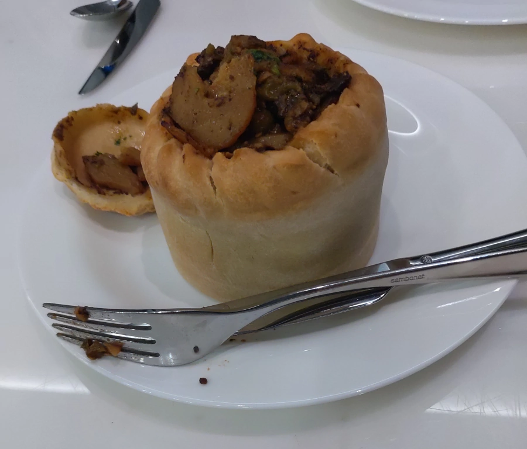
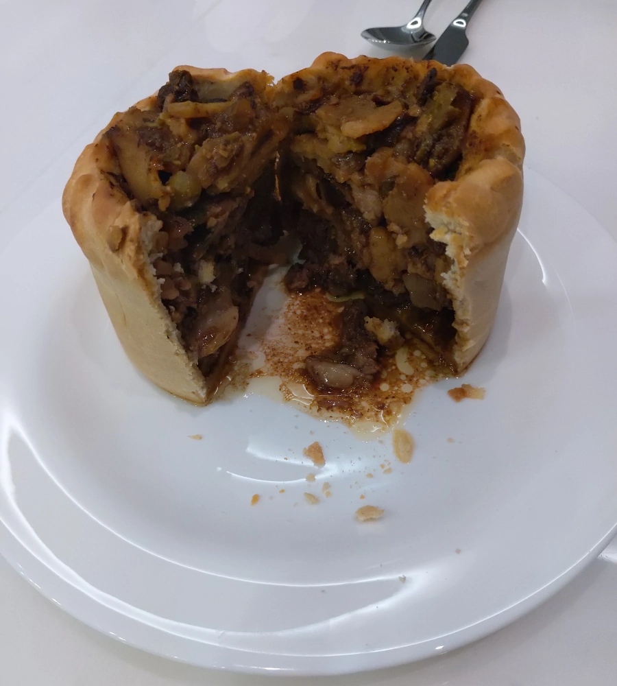

[竹北] GD Restaurant 二訪
| 餐廳名稱: | GD Restaurant |
|---|---|
| 地 址: | 新竹縣竹北市十興三街123號 |
| 營業時間: | 週二至週日 18:00-1:00 (last order 21:00) |
| 每週一 公休 | |
| 電話 : | 03 6688982 |
距離上一訪 也快四個月了，今天有一點吃大餐的心情， 決定再來 GD Restaurant 一次看看。
上一次是開幕，滿滿的客人。今天比較正常了，人數適中。 
桌上的聖擺擺飾 挺有趣的。 
菜單其實給了三份。第一份是套餐，就是下列這張照片。第二份是飲料單，我就沒拍了。 
第三份就是單點的菜單，但第一頁似乎照壞了，刪掉了。  
炸節瓜直面 帕瑪森佩克里諾起士醬，拌麵的起士醬很好吃，炸節瓜寥寥幾片。高級餐廳的義大利麵都很小一丸。 
生牡丹蝦 檸檬蝦膏醬 手工麵，這道菜食材高級，可是吃起來沒什麼特別感覺，蝦膏醬感覺苦苦的， 牡丹蝦小小一坨，一樣是很小一丸的義大利麵。  吃到這裡，都想點上次覺得好吃的 烏魚子管麵 與 雞肝管麵 ，再加一盤麵包了，這兩道菜吃剩的油與渣，很適合沾麵包吃。感覺差很多，怎麼好吃的都在上次點了。 (服務人員告知 烏魚子由進口的薩丁尼亞島的烏魚子換成竹北當地的生鮮烏魚子，主廚自己醃製，略想試試，不過最後還是點沒吃過的，此刻後悔了)
接下來這道 迷你羊毛毯驚喜 - 手工薩丁尼亞島羊肉烤派。 看名字特殊就點點看，但口味仍然不太合。 送上來時是用布包著，放置好後才打開包裹，移到餐盤上。 內餡的羊肉塊與馬鈴薯塊 吃起來其實有點像台式滷肉，但是香料稍微不一樣，略鹹鹹微苦，羊腥羶味已被香料除掉，派皮略硬。
迷你羊毛毯驚喜 的 成品圖。 
迷你羊毛毯驚喜 的 剖面圖。 
這次吃得稍微不滿意，只有第一道菜 炸節瓜直面 帕瑪森佩克里諾起士醬 比較好吃。 生牡丹蝦 檸檬蝦膏醬 手工麵 覺得還好。 迷你羊毛毯驚喜 覺得還好。 但是上一訪，每道菜都覺得好吃。難道是點菜的運氣用光了嗎? 還是主廚當天不在?
還是懷念那個 Noi私廚 時期的千層麵，好吃，份量不錯。GD 辦過限定時間提供千層麵，當時沒注意到官方臉書，沒參加到。 只能繼續追憶了。